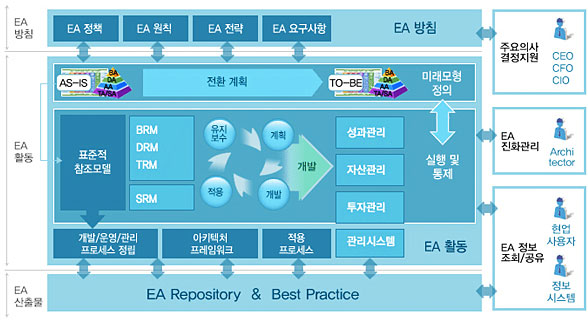
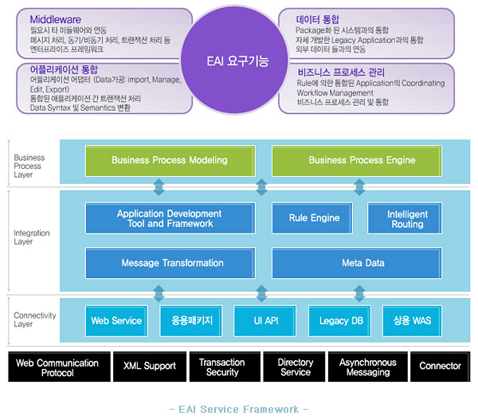

컨설팅 서비스
현재 비즈니스 여건은 기술 혁신, 경영환경의 변화 등으로 인해 다변화하는 환경에 노출되어 있으며 생존을 위해 내부적으로는
시스템의 통합과 외부적으로 관련 기업과의 통합을 이룩해나가고 있습니다.
이러한 급변하는 환경과 내외부적인 통합을 성공적으로 이룩하기 위해서는 비즈니스 현황과 문제를 진단하여 최적화된 IT 기술을
접목시키는 것이 필요합니다.
IT 기술의 최적화를 구현하기 위해서는 해당 컨설팅 업무 경험과 빠르게 변화하는 IT 기술에 대한 지식이 필요합니다.
cmsg 는 지난 수년간 통신산업을 중심으로 다양한 경험과 축적된 기술 그리고 우수한 인력을 바탕으로 고객사의 시스템을
효율적이고 안정적으로 구축할 수 있도록 도와드립니다.
-
 개요
개요
EA(Enterprise Architecture)는 기업의 주요 비즈니스 정보와 업무 프로세스, 어플리케이션과 기술 전략 등 각 요소가

업무 프로세스에 미치는 영향에 대해 그 관계를 현재 모습과 향후 모습으로 총괄 표현한 청사진(blueprint)입니다.
기업은 EA를 통해 비즈니스와 IT 연계의 가시성을 확보할 수 있고 비즈니스 기반의 IT 통제 및 관리가 가능합니다.
cmsg가 제공하는 EA는 고객사의 기획/개발/운영 부서의 핵심 정보와 프로세스를 상호연계, 자동화하여 급변하는 비즈니스
환경에 기업이 능동적으로 대처하게 함으로써 기업경쟁력을 제고하고 비즈니스 성과를 극대화할 수 있도록 지원합니다.
또한 기업고객이 신속한 의사결정, 비즈니스로부터 IT에 이르는 연계성 확보, IT중복투자 방지, IT자산에 대한 가치 재정립
등의 효과를 기대할 수 있는 서비스를 제공합니다. 기대 효과
- 기업 비즈니스와 IT의 연계성 확보
- IT 중복투자 방지 및 IT 자산에 대한 가치 재정립
- 기업 경쟁력 제고 및 비즈니스 성과 극대화
- EA기반의 정보전략계획(ISP)을 지원함으로써 단발성 계획 수립이 아닌 지속적이고 일관성 있는 체계적 계획을 제공 -
개요
기업내 시스템간 인터페이스(EAI: Enterprise Application Integration, 전사적 어플리케이션 통합)는 기업의

핵심 어플리케이션인 DW, ERP, CRM, SCM, B2B 등 기업에서 운영하는 서로 다른 어플리케이션 및 시스템을
통합하는 것을 말합니다. 기업은 EAI 프로젝트를 통해 업무의 효율성 및 확장성을 높이고,
유지보수시간 및 비용 절감, 편의성을 높일 수 있습니다.
cmsg는 고객사의 기존에 구축되어 있는 시스템과 시스템을 쉽게 통합함으로써
시스템 간 연동에 대한 비용 및 시간 투자를 최소화할 수 있으며, 기업 내 다양한 어플리케이션과
산재한 데이터를 통합하고 비즈니스 프로세스 관리의 새로운 기틀을 마련할 수 있게 컨설팅을 비롯한
설계 및 개발을 제공해 드릴 수 있습니다. 기대 효과
- 기업 내 어플리케이션에 대한 개발시간 단축 및 개발 비용 절감
- 변화되고 확장되는 비즈니스 프로세스에 대한 유연성 제공
- 유지보수 비용에 대한 절감 및 중앙집중관리의 극대화